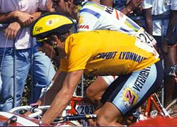

Speed são bicicletas feitas para velocidade. Bicicletas speed são mais leves que outros tipos, além de terem uma arquitetura voltada para o formato aerodinâmico.
Graças à moderna indústria, a bicicleta é cada vez mais leve, resistente e veloz. Uma brilhante vitória para a máquina que melhor uso faz da energia humana.

Na verdade, a pequena vantagem deixou margem para que os especialistas em ciclismo atribuíssem o êxito do americano não a seu esforço individual, mas à utilização de um novo aparato, destinado a aumentar a aerodinâmica de sua bicicleta. Tratava-se de uma extensão em forma de U, presa ao guidão, que permite ao ciclista apoiar o cotovelo sem sair da posição que proporciona o melhor rendimento nas pedaladas. A uma velocidade de 40 km/h, LeMond foi ganhando de seu adversário francês até 2 segundos por quilômetro rodado, um desempenho tão notável que levou Fignon a adotar o dispositivo em outras provas.
Tarefa difícil, pois a bicicleta tem sido a mais eficiente máquina já criada para converter energia humana em propulsão. Apenas 1% da energia transmitida das pernas à roda traseira se perde, o que torna possível ao ciclista manter facilmente a marcha entre 16 e 19 km/h, isto é, quase quatro vezes a velocidade do caminhar. Não é por outra razão que o formato deste veículo pouco mudou ao longo de sua história.
| Atleta | Equipe |
|---|---|
| Alan Valencio Maniezzo | Ribeirão Preto |
| Daniel Souza Dos Santos | topazza team |
| Felipe Cristiano Dos Santos | Taubaté cycling team |
| Cristian Egido Da Rosa | São Francisco Saúde |
| Alex Fábio Costa Correia | Topazza team |